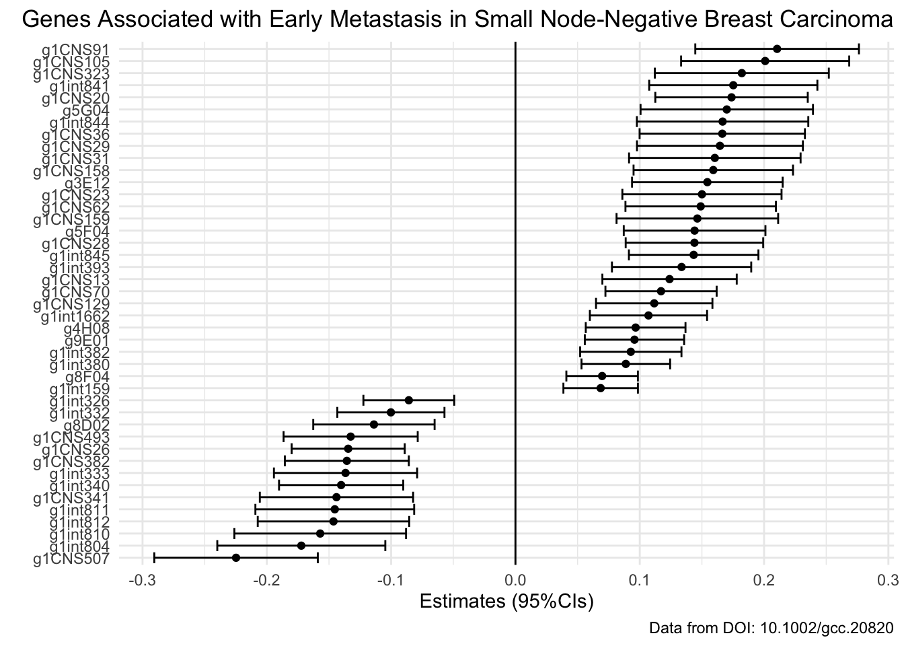

xy <- seq(from = -3,
to = 3,
by = 0.01)
expand.grid(x = xy,
y = xy) |>
ggplot(
mapping = aes(
x = (1 - x - sin(y^2)),
y = (1 + y - cos(x^2)))) +
geom_point(alpha = 0.05,
shape = 20,
size = 0) +
theme_void() +
coord_polar()Lab 6: Applying Functional Programming with Purrr to Models
Package(s)
Schedule
- 08.00 - 08.45: Recap of Lab 5
- 08.45 - 09.00: Lecture
- 09.00 - 09.15: Break
- 09.00 - 12.00: Exercises
Learning Materials
Please prepare the following materials:
- Important: Questionnaire (brief, 5-10 min): Course Midway Evaluation
- Book (Note, this is intentionally 1.ed.): R4DS: Chapter 22: Introduction
- Book (Note, this is intentionally 1.ed.): Chapter 23: Model Basics
- Book (Note, this is intentionally 1.ed.): Chapter 24: Model Building
- Book (Note, this is intentionally 1.ed.): Chapter 25: Many models
- Video: Broom: Converting Statistical Models to Tidy Data Frames
- Video: Alex Hayes | Solving the model representation problem with broom | RStudio (2019)
- Video: “The Joy of Functional Programming (for Data Science)” with Hadley Wickham
- Optional: If you are completely new to statistical modelling, then click here for a primer
Unless explicitly stated, do not do the per-chapter exercises in the R4DS2e book
Learning Objectives
A student who has met the objectives of the session will be able to:
- Fit a simple linear model and interpret model parameters
- Understand and apply simple purrr-functions for element-wise function application
- Understand and apply grouped supervised models to form nested model objects
- Understand and apply the broom-functions for tidying various model objects
- Optional LO: Perform a basic principal component analysis for dimension reduction of high dimensional data
- Optional LO: Perform a basic unsupervised k-means clustering of high dimensional data
Exercises
Throwback…
Using the tibble() function, re-create the data from this visualisation and then create your version of how this data could be visualised in a more informative manner:

Also… If you still need to be convinced of the flexibility of ggplot, try running this code:
If you are curious about what is going on here, try googling “Generative art”… Anyhoo… Let us move on…
Prologue
So far, we have worked on
- Lab 2: Genomics, the
gravierdata from Gravier et al. (2010). - Lab 3: Metagenomics, the
pitlatrinedata from Torondel et al. (2016). - Lab 4: Clinical data, the
diabetesdata from Willems et al. (1997) and Schorling et al. (1997). - Lab 5: High throughput immunoinformatics data, the
SARS-CoV-2data from Nolan et al. (2020).
Getting Started
- Once again, please go to the course cloud RStudio server and login
- Create a new Quarto document and remember to save it
Today, we will re-examine the data acquired in Lab 2 to further explore the research question:
- What genes are significantly up- or down-regulated between the patients with/without early metastasis?“
Load Data
Recall, so far we have adjusted the chunk setting to #| eval: true first time we get some data from an online repository and then subsequently set #| eval: false.
Let’s do that in a bit nicer way.
- T1: Create a new “Load Data” header in your document and add the below chunk:
raw_dir <- "data/_raw/"
data_file <- "gravier.RData"
data_loc <- "https://github.com/ramhiser/datamicroarray/raw/master/data/"
if( !dir.exists(raw_dir) ){
dir.create(path = raw_dir)
}
if( !file.exists(str_c(raw_dir, data_file)) ){
download.file(
url = str_c(data_loc, data_file),
destfile = str_c(raw_dir, data_file))
}
load(file = str_c(raw_dir, data_file))- Q1: In your group, discuss, what is going on here? Make sure you follow the difference between the first time you run this and the second!
Click here for hint
We have used the str_c() function before, try running e.g.:
x <- "a"
y <- "b"
str_c(x, y)For the functions dir.exists() and file.exists(), the hint is in the title, they return logicals. To get a better understanding of this, try running e.g.:
x <- 2
x == 2
if( x == 2 ){
print("Yes!")
}Then change x == 2 to x != 2, re-run the code and see what happens
Clean Data
The next step is to clean up the data:
- Use the
ls()function to see what objects you have in your environment - Use the
str()function on the gravier data you retrieved to answer:
Q2: Discuss in your group if this is tidy data?
T2: Create a new “Clean Data” header in your document and add the below chunk:
gravier_clean <- gravier |>
bind_cols() |>
as_tibble()Q3: Discuss in your group if this is tidy data?
Q4: In fact, specifically state what are the “rules” for tidy data?
Q5: In your group, discuss why
bind_colscan by very very dangerous to use?
Now, moving on, let’s write the clean data to disk:
- T3: In your “Clean Data”-section, add a new chunk, where you write a tab-separated-values gzipped (i.e. compressed) file called “02_gravier_clean” (with the correct file type specification) into your “data”-folder
Click here for hint
Just as you canread a file, you can of course also write a file. Note the file type we want to write here is tab-separated-values. If you in the console type e.g. readr::wr and then hit the Tab key, you will see the different functions for writing different file types. We previously did a trick to automatically gzip (compress) files?
Augment Data
- T4: Create a new “Augment Data” header in your document and add the below chunk:
gravier_clean_aug <- gravier_clean |>
mutate(y = case_when(y == "poor" ~ 1,
y == "good" ~ 0)) |>
relocate(early_metastasis = y)Q6: In your group, discuss, what each step of the above work flow does, i.e. what are the specifics of the
dplyrpipeline?T5: In your “Augment Data”-section, add a new chunk, where you write a tab-separated-values gzipped (i.e. compressed) file called “03_gravier_clean_aug” (with the correct file type specification) into your “data” folder
Analysis
One Gene, one model
- T6: Create a new “Analysis” header in your document
Recall, in the second lab, we were looking at ‚Äúour favourite gene‚Äù. In the following either look back to what was your favourite gene or choose a new ü§∑Ô∏è
Let’s fit our first model! If the concept of models and linear regression is unfamiliar, consider checking out the primer on linear models in R before proceeding.
- T7: Use the
lm()function to create your first model and save it to a new variable e.g. “my_first_model”
Click here for hint
Use the formulamy_favourite_gene ~ early_metastasis and remember when you pipe into the lm() function, you have to specify data = _
- Q7: What are your coefficients? Mine are:
(Intercept) early_metastasis
-0.01616011 -0.03426164 T8: Use the
group_by()\(\rightarrow\)summarise()workflow to calculate the mean values of the gene expression for your favourite gene stratified onearly_metastasisQ8: What are your mean values? Mine are:
# A tibble: 2 × 2
early_metastasis mu
<dbl> <dbl>
1 0 -0.0162
2 1 -0.0504- Q9: Discuss in your group: How are your coefficients related to your mean expression values?
Click here for hint
Recall, we have two terms here,intercept and slope. The intercept is the y value at x = 0 and the slope is the change in y value, for one unit change in x
- Q10: Discuss in your group: Is your gene up- or down-regulated from
early_metastasis = 0toearly_metastasis = 1and use thesummary()function to see if is it statistically significant at a level of significance of \(\alpha = 0.05\)?
Click here for hint
Try to runmy_first_model |> summary() and look at the estimate for early_metastasis, i.e. the slope and also see if you can find the p-value somewhere in this summary…
Excellent! Now we have a feeling for working with the lm() functions and a basic understanding of the meaning of the coefficients, when we are using linear regression to model a binary outcome. The reason that we use a linear regression model in this case is, that for these exercises, we want to investigate the relationship between variables rather than obtaining probability predictions, i.e.
- What genes are significantly up-/down-regulated between the patients with- and without early metastasis?
So, without further ado, let’s dive in!
All the Genes, all the models
First, the recent couple of years have seen an immense development in unifying the modelling interface in R, which is notoriously inconsistent. You may be familiar with the caret package, the developer of which has created tidymodels, (which I really wish we had time to explore in details). In the following we will work with some of the principles for tidying model object using broom, having object nested in tibbles and working with these using purrr.
Now, you saw above how we could fit one model for one gene. So, we could repeat the procedure you worked through for each gene, but first consider:
- Q11: How many genes are there in the gravier data set?
Now, we just have to make one model for each gene!

Honestly, let’s not! Also, recall: “We don’t loop, we func!”, so let’s see how that would work.
Models, models everywhere…
In principle, you could overflow your environment with individual model objects, but that would require a lot of code-lines and a lot of hard-coding. But let us instead see if we can come up with something just a tad more clever.
Preparing the Data
First:
- Q12: Discuss in your group, if the
gravier_clean_augis a “wide” or a “long” dataset?
Once you have agreed upon and understood why, this is a wide data set, proceed and:
- T9: Create this long version of your
gravier_clean_augdata and save it ingravier_clean_aug_long
# A tibble: 488,040 × 3
early_metastasis gene log2_expr_level
<dbl> <chr> <dbl>
1 0 g2E09 -0.00144
2 0 g7F07 -0.00144
3 0 g1A01 -0.0831
4 0 g3C09 -0.0475
5 0 g3H08 0.0158
6 0 g1A08 -0.0336
7 0 g1B01 -0.136
8 0 g1int1 0.0180
9 0 g1E11 0.0257
10 0 g8G02 0.00720
# ℹ 488,030 more rows
Click here for hint
Recall which function took a dataset from “wide” to “long” format and also the three parameters of interest for that function iscols, names_to and values_to. If you look at my example, you will see that the columns we have pivoted have types <chr> and <dbl>, these will map to the names_to and values_to parameters respectively. The cols can be used with the so-called “helper-functions”, that we have previously talked about. If you look at the gene-columns in the data, all the genes starts with a “g”, so we can use the helper functions starts_with() and then give the argument “g” to the match parameter
The reason we want the “long” version of the data set is, that now we have ALL the genes defined in ONE gene column. This means that we can use group_by() to work per gene without looping (Recall: Don’t loop, only func!).
Now:
- T10: Create a
dplyrpipeline, use thegroup_by()function to group yourgravier_clean_aug_longdataset bygeneand then add thenest()andungroup()functions to your pipeline
# A tibble: 2,905 × 2
gene data
<chr> <list>
1 g2E09 <tibble [168 × 2]>
2 g7F07 <tibble [168 × 2]>
3 g1A01 <tibble [168 × 2]>
4 g3C09 <tibble [168 × 2]>
5 g3H08 <tibble [168 × 2]>
6 g1A08 <tibble [168 × 2]>
7 g1B01 <tibble [168 × 2]>
8 g1int1 <tibble [168 × 2]>
9 g1E11 <tibble [168 × 2]>
10 g8G02 <tibble [168 × 2]>
# ℹ 2,895 more rowsNote, this is conceptually a super-tricky data structure!
- Q13: Discuss in your group, what happened to the data?
Click here for hint
Try to run each of the following code chunks and examine what happens at each step:
gravier_clean_aug_long_nestedgravier_clean_aug_long_nested |>
filter(gene == "g2E09") # Replace "g2E09" with whatever was YOUR favourite gene!gravier_clean_aug_long_nested |>
filter(gene == "g2E09") |> # Replace "g2E09" with whatever was YOUR favourite gene!
pull(data)- Q14: Moreover, discuss in your group, what does
<tibble [168 × 2]>mean?
Now, if you’re experiencing, that the server seems slow, consider if you want to proceed now with ALL the genes or just a subset. If you just want a subset, then use sample_n() to randomly select e.g. 100 genes for further analysis. Remember you may want to use the set.seed() function to create a reproducible work flow even when sampling.
Fitting Models
Now, recall our research question:
- What genes are significantly up-/down-regulated between the patients with- and without early metastasis?
To investigate this, we want to fit a linear model to each gene, i.e. as you did initially for your favourite gene, we want to do in a clever way per gene for ALL genes.
- T11: Use the
group_by()function to letRknow, that we want to work per gene
# A tibble: 2,905 × 2
# Groups: gene [2,905]
gene data
<chr> <list>
1 g2E09 <tibble [168 × 2]>
2 g7F07 <tibble [168 × 2]>
3 g1A01 <tibble [168 × 2]>
4 g3C09 <tibble [168 × 2]>
5 g3H08 <tibble [168 × 2]>
6 g1A08 <tibble [168 × 2]>
7 g1B01 <tibble [168 × 2]>
8 g1int1 <tibble [168 × 2]>
9 g1E11 <tibble [168 × 2]>
10 g8G02 <tibble [168 × 2]>
# ℹ 2,895 more rows- T12: Then add a new line to your pipeline, where you add a new variable
model_objectto yourgravier_clean_aug_long_nesteddataset, whichRwill compute per gene
To do this you will need the following syntax and then wrap that inside the relevant tidyverse-function for creating a new variable:
model_object = map(.x = data,
.f = ~lm(formula = log2_expr_level ~ early_metastasis,
data = .x))Make sure to understand the map() function here, it is completely central to functional programming with purrr:
- We need the
group_by()to define which variable holds the elements to each of which we want to map model_objectis a new variable, we are creating, which will contain the result of our call to themap()function.xto what existing (nested) variable are we mapping?.fwhich function do we want to map to each element in the existing (nested) variable?- Note that
log2_expr_levelandearly_metastasisare variables “inside” the nesteddatavariable
Note, once again, this is conceptually a super-tricky data structure, not only do we have a per gene nested tibble, but now we also have a per gene nested model object - So please do make sure to discuss in your group, what is going on here, e.g. try running this and discuss what you see:
gravier_clean_aug_long_nested |>
filter(gene == "g2E09") |> # Replace "g2E09" with whatever was YOUR favourite gene!
pull(model_object)Tidying Models
Excellent! Now we have a per gene model. Let us use the broom package to extract some information from each of the models. First, to get a better understanding of what is going on when calling the tidy() function, try running this:
gravier_clean_aug_long_nested |>
# Here, you should replace "g2E09" with whatever was YOUR favourite gene!
filter(gene == "g2E09") |>
# Pull() on tibbles: This pulls out the model_object variable.
# Note! This is a list, because we nested!
pull(model_object) |>
# Pluck() on lists: From the list we got from the last step,
# we "pluck" the first element
pluck(1) |>
# The result of pluck, is a model object,
# upon which we can call the tidy function
tidy(conf.int = TRUE,
conf.level = 0.95)Now, we want to apply this tidy() function per model_object:
- T13: Scroll a bit back to where we created the
model_objectand see if you can translate that into mapping thetidy()function to themodel_objectvariable, thereby creating a new variablemodel_object_tidy- This is tricky, so do make sure to discuss in your group how this can be done!
Click here for hint
Remember the parameters to thetidy() functions, which gives us the confidence intervals and defines corresponding level. Also, everything you need is in the previous layout of the map() function. Note, that the calls to the pull() and pluck() functions above, pertains to extracting from a tibble, which we do not want, on the contrary, we want all objects to be contained in our gravier_clean_aug_long_nested data
# A tibble: 2,905 × 4
# Groups: gene [2,905]
gene data model_object model_object_tidy
<chr> <list> <list> <list>
1 g2E09 <tibble [168 × 2]> <lm> <tibble [2 × 7]>
2 g7F07 <tibble [168 × 2]> <lm> <tibble [2 × 7]>
3 g1A01 <tibble [168 × 2]> <lm> <tibble [2 × 7]>
4 g3C09 <tibble [168 × 2]> <lm> <tibble [2 × 7]>
5 g3H08 <tibble [168 × 2]> <lm> <tibble [2 × 7]>
6 g1A08 <tibble [168 × 2]> <lm> <tibble [2 × 7]>
7 g1B01 <tibble [168 × 2]> <lm> <tibble [2 × 7]>
8 g1int1 <tibble [168 × 2]> <lm> <tibble [2 × 7]>
9 g1E11 <tibble [168 × 2]> <lm> <tibble [2 × 7]>
10 g8G02 <tibble [168 × 2]> <lm> <tibble [2 × 7]>
# ℹ 2,895 more rowsNote, once again, this is conceptually a super-tricky data structure, not only do we have a per gene nested tibble, but now we also have a per gene nested model object and now also a nested tibble of tidyed objects - So please again do make sure to discuss in your group, what is going on here, e.g. try running this and discuss what you see:
gravier_clean_aug_long_nested |>
filter(gene == "g2E09") |> # Replace "g2E09" with whatever was YOUR favourite gene!
pull(model_object_tidy)Wrangling
We’re almost there - just a bit of wrangling to go!
Just as you saw that we could nest() on a variable (recall we did that for the gene variable), you can do the opposite and lo and behold, that is the unnest() function. Before we continue:
- T14: Create a
dplyrpipeline and save the result in a new variable calledgravier_estimates: Use theunnest()function to unpack themodel_object_tidy
# A tibble: 5,810 × 10
# Groups: gene [2,905]
gene data model_object term estimate std.error statistic p.value
<chr> <list> <list> <chr> <dbl> <dbl> <dbl> <dbl>
1 g2E09 <tibble> <lm> (Intercept) -0.0162 0.0117 -1.38 1.69e-1
2 g2E09 <tibble> <lm> early_metas… -0.0343 0.0201 -1.71 8.99e-2
3 g7F07 <tibble> <lm> (Intercept) 0.0604 0.0139 4.35 2.36e-5
4 g7F07 <tibble> <lm> early_metas… -0.0185 0.0238 -0.778 4.38e-1
5 g1A01 <tibble> <lm> (Intercept) -0.0290 0.0123 -2.35 1.99e-2
6 g1A01 <tibble> <lm> early_metas… -0.0367 0.0211 -1.73 8.47e-2
7 g3C09 <tibble> <lm> (Intercept) 0.0518 0.0145 3.58 4.55e-4
8 g3C09 <tibble> <lm> early_metas… -0.0148 0.0249 -0.595 5.53e-1
9 g3H08 <tibble> <lm> (Intercept) 0.0142 0.0128 1.11 2.69e-1
10 g3H08 <tibble> <lm> early_metas… 0.00247 0.0220 0.112 9.11e-1
# ℹ 5,800 more rows
# ℹ 2 more variables: conf.low <dbl>, conf.high <dbl>- T15: The again, create a
dplyrpipeline and save the result in a the samegravier_estimatesvariable: Subset the rows to only get the slope term and then choose variables as displayed below, finally end with un-grouping your data, as we no longer need the groups
# A tibble: 2,905 × 5
gene p.value estimate conf.low conf.high
<chr> <dbl> <dbl> <dbl> <dbl>
1 g2E09 0.0899 -0.0343 -0.0739 0.00539
2 g7F07 0.438 -0.0185 -0.0655 0.0285
3 g1A01 0.0847 -0.0367 -0.0784 0.00508
4 g3C09 0.553 -0.0148 -0.0639 0.0343
5 g3H08 0.911 0.00247 -0.0410 0.0459
6 g1A08 0.859 -0.00363 -0.0438 0.0366
7 g1B01 0.279 -0.0218 -0.0615 0.0178
8 g1int1 0.666 -0.0113 -0.0627 0.0402
9 g1E11 0.106 -0.0329 -0.0728 0.00703
10 g8G02 0.633 -0.0108 -0.0555 0.0338
# ℹ 2,895 more rows- T16: To your
gravier_estimatesdataset, add a variableq.value, which is the result of calling thep.adjust()function on yourp.valuevariable and also add an indicator variable denoting if a given gene is significant or not
# A tibble: 2,905 × 7
gene p.value estimate conf.low conf.high q.value is_significant
<chr> <dbl> <dbl> <dbl> <dbl> <dbl> <chr>
1 g2E09 0.0899 -0.0343 -0.0739 0.00539 1 no
2 g7F07 0.438 -0.0185 -0.0655 0.0285 1 no
3 g1A01 0.0847 -0.0367 -0.0784 0.00508 1 no
4 g3C09 0.553 -0.0148 -0.0639 0.0343 1 no
5 g3H08 0.911 0.00247 -0.0410 0.0459 1 no
6 g1A08 0.859 -0.00363 -0.0438 0.0366 1 no
7 g1B01 0.279 -0.0218 -0.0615 0.0178 1 no
8 g1int1 0.666 -0.0113 -0.0627 0.0402 1 no
9 g1E11 0.106 -0.0329 -0.0728 0.00703 1 no
10 g8G02 0.633 -0.0108 -0.0555 0.0338 1 no
# ℹ 2,895 more rowsBut… q.value??? What are you on about??? For a nice primer on how multiple testing correction works, please read this article by Noble (2009)!
Recap
If you (understandably by now) have lost a bit of overview of what is going on, let’s just re-iterate.
- We have the
gravierdataset, with the log2-expression levels for 2,905 genes of 168 patients of whom 111 did not have early metastasis and 57 who did - We are interested in investigating what genes are significantly up-/down-regulated between the patients with- and without early metastasis
- First, we retrieved the data from the data repository, cleaned and augmented it and saved it to disk
- Then pivoted the data, so we could work per gene (The
genevariable) - Next, we grouped per gene and nested the data (The
datavariable) - Then, we fitted a linear model to each gene (The
model_objectvariable) - Next, we used the
broompackage to tidy the fitted model incl. getting confidence intervals (Themodel_object_tidyvariable) - Lastly, we extracted the model parameters, corrected for multiple testing and added and indicator for significant findings
Now, we actually have everything we need to answer:
- What genes are significantly up- or down-regulated between the patients with/without early metastasis?
In the following, we will use a level of significance of \(\alpha = 0.05\) to provide this answer.
Visualise
Right, let’s get to it!
- T17: Re-create this forest plot to finally reveal the results of your analysis GROUP ASSIGNMENT (Important, see: how to)

Click here for hint
Here, you will have to use your indicator variable to identify significant genes before plotting and then it would probably be prudent to take a look at thefct_reorder() function and geom_errorbarh() representation
- T18: Re-create this volcano plot to finally reveal the results of your analysis GROUP ASSIGNMENT part II
Click here for hint
Here,before plotting you will have to create a new label-variable which takes valuegene for significant genes and otherwise is simply an empty string, which we denote by "". Also, perhaps the ggrepel package would be relevant for somehow adding text/labels
GROUP ASSIGNMENT
For the group assignment this time, you will use T17 and T18 to again create a reproducible micro-report and make sure to:
Optional
The following is only if you can find the time! But, perhaps this would be something interesting to revisit during the project period
PCA
- Go and visit this blog post by Claus O. Wilke, Professor of Integrative Biology.
- Your task is to work through the blog post using the
gravierdataset to create a PCA analysis
K-means
- Go and visit this K-means clustering with tidy data principles post
- Your task is to work through the blog post using the
gravierdataset to create a K-means analysis